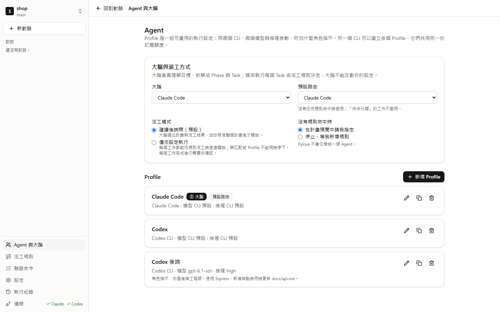

這些是 Pyloxa 的範例規則。規則由你自己寫，每個工作都會標出它命中的規則。
每份成果都經過檢查
執行中
已驗證
新增 GET /api/profile 端點，回傳目前登入會員的資料，並加上測試。
已新增 GET /api/profile，回傳會員的名稱與 email，並加上 2 個測試。npm run test 通過。
已整合
不只是多開幾個 Agent
能同時開好幾個 Agent 的工具已經不少。Pyloxa 處理的是 Agent 之間的事：誰做哪一件、做完怎麼確認、做不下去時誰接手。
下面是同一份需求的三種做法：自己在幾個 CLI 之間切換、用終端機多工工具把多個 Agent 的終端並排，以及交給 Pyloxa。
| 自己切換 CLI | 終端機多工工具 | 交給 Pyloxa | |
|---|---|---|---|
| 分工 | 判斷每件事適合哪個工具，再把需求複製過去。 | 你決定每個終端裡的 Agent 做什麼；有些工具也讓 Agent 自己叫起其他 Agent。 | 大腦把需求拆成階段與工作，依你的規則派給 Agent；每個工作都寫明命中哪條規則。 |
| 交接 | 前一個 Agent 做完，你把 API 格式和檔案位置貼給下一個。 | Agent 之間可以互傳訊息，交接什麼由 Agent 自己決定。 | 下一個階段自動拿到上游的交接包：成果、通過的檢查和要注意的事。 |
| 算不算完成 | Agent 說做完了，你自己跑測試確認。 | 看得到每個 Agent 在跑、做完或在等你；結果對不對，還是你自己確認。 | 驗證命令在工作自己的 worktree 跑過才算完成；沒通過，Agent 會自動修正一次。也可以交給另一個 Agent 補測試、讓大腦驗收；大腦的結論會標示為 AI 驗收。 |
| 額度用完 | 換一個工具，重新解釋做到哪裡。 | 那個終端停下來等你，換人接手要你自己安排。 | 依你的規則提出備援，你確認後，從前一個 Agent 改好的檔案接著做。 |
| 你的 repo | Agent 直接改你的工作目錄。 | 看你在終端裡怎麼開：通常就在你的工作目錄。 | 每個工作在自己的 git worktree；完成後核對改動是否都在允許的寫入範圍內，合併、推送由你決定。 |
| 比較適合 | 一次只做一件事。 | 想同時盯著很多個終端、關掉 App 後讓 Agent 繼續跑，或連到遠端機器。 | 想把一份需求拆給不同 Agent，做完先驗收再合併。 |
運作方式
先說你想做什麼。

再核准計畫。

最後合併通過的成果。
- Adocs/api/profile.yaml
- Aserver/src/routes/profile.ts
- Aweb/src/pages/Profile.tsx
- Atest/profile.test.ts
- Atest/contract.test.ts
照你的方式分工
用哪個模型、哪種工作交給誰、做到哪一步要先問你，都是你的設定。大腦只負責提計畫，不能改動這些設定。
每個 Agent 都是你設定的 Profile
Profile 決定用哪個 CLI、哪個模型、多少推理，以及每個工作要附上的角色指示。同一個 CLI 可以建好幾個，例如「Claude 前端」和「Claude 文件」。
- 模型清單直接取自你安裝的 CLI；推理參數顯示各家原生的值（Claude Code 的
--effort、Codex 的model_reasoning_effort），不硬換算成同一套刻度。 - 任何一個 Profile 都能當大腦，負責讀專案和拆計畫；大腦和執行工作的 Agent 可以用不同的模型。
- Profile 只存設定，不存任何憑證。
誰來做，由你的規則決定
規則用「階段類型」加「工作類型」比對，例如「開發階段的後端工作交給 Codex 後端」。每條規則有主要交給的 Profile 和備援順序，可以套用到所有專案，或只用在目前的專案。
- 規則由上往下比對，第一條完全符合的生效；規則互相遮蔽時會提醒你。
- 規則模擬不呼叫 Agent、不花額度：選一種工作，就看到會交給誰、為什麼。
- 沒有規則符合時，可以設成在計畫預覽中問你，或直接停下。Pyloxa 不會隨便挑一個 Agent。
每個階段做完，用你的命令驗收
大腦依需求排出階段，例如規格、Contract、開發、測試。核准前，你可以改派某個工作、修改它的指示，或請大腦重擬。
- 驗證命令要你核准，例如
npm run test，可以先在暫時的 worktree 試跑。大腦只能用你核准過的命令。 - 每個工作完成後，在它自己的 worktree 跑驗收；每個階段結束時，在整合後的版本再跑一次 Gate。
- Gate 可以通過後自動往下走，也可以停下來等你核准。
- 完成的工作可以交給另一個 Agent 測試，例如 Codex 開發、Claude Code 補測試。測試者只能修改測試檔，Pyloxa 會在成果上重跑你的命令。
- 大腦可以驗收完成的工作，並使用自己的模型與思考強度。結論會標示為 AI 驗收；要求你親自確認的工作，仍然等你決定。
要放手多少，你決定
派工模式決定 Pyloxa 什麼時候要先問你。不論哪一種，推送和部署都不會自動發生。
- 大腦和執行工作的 Agent 分開設定；執行工作的 Agent 額度不足，不會換掉大腦。
- 每個工作最多自動嘗試 3 次，計畫有工作數與時間上限，不會無限重試。

一份 Skills，每個 Agent 都用得到
Claude Code 讀 ~/.claude/skills，Codex 讀 ~/.agents/skills。同一個 Skill 各放一份，改了一邊，另一邊就過時了。Pyloxa 會把它們集中管理。
- 盤點免費版列出每個 CLI 裝了哪些 Skills，標出名稱相同、內容卻不一樣的。
- 同步Pro以
~/.agents/skills當 Skills 庫，同步到每個 CLI。你在 CLI 那邊改過的檔案不會被覆寫，Pyloxa 會先問你。 - 指派Pro每個專案勾選要用哪些 Skills；Claude Code 與 Codex 還能依 Profile 指定。
- 派工包Pro把派工規則、Skills、流程與驗證命令打包分享。匯入時逐項預覽，不會蓋掉你原本的規則。
| 名稱 | Claude Code | Codex | shop 專案 |
|---|---|---|---|
| api-contract | 已同步 | 已同步 | 使用中 |
| react-conventions | 已同步 | 內容不同 | 使用中 |
| release-notes | 沒有 | 已同步 | 未使用 |
| db-migration | 已同步 | 已同步 | 未使用 |
| test-writer | 已同步 | 已同步 | 使用中 |
示意畫面。盤點從 0.1.2 起包含在免費版；同步、指派與派工包屬於 Pro，還在開發。
額度用完的時候
如果 Codex 做到一半用完額度，Pyloxa 會停止派工給它、顯示額度何時重設，並依你的規則提出備援。你確認後，Claude Code 會從 Codex 已經改好的檔案接著做。

每個工作都跑我的測試。
npm run test 在每個工作自己的 worktree 執行。通過就自動接受；沒通過，Agent 會自動修正一次。
進下一個階段前先問我。
階段先在整合後的版本跑完命令，再等你按一下。不開的話，檢查通過的階段會自己往下走。
絕不碰我的憑證。
Pyloxa 只執行你已登入的 CLI，從不讀取、複製或傳送它們的 token，也不會 stash 或 reset 你的工作目錄。
用我的語言回覆。
介面與 Agent 的回覆語言可以分開選：繁體中文、简体中文或 English。
免費版陪你做一個專案，Pro 幫你同時顧好所有專案。
免費版就能走完整個流程：擬計畫、派工、驗收、合併。Pro 把你原本要親手做的事交給 Pyloxa：多個專案一起跑、在你設定的範圍內自己決定、額度用完自己接手、做完自己找另一個 Agent 測試。
| 方案比較 | 免費版$0 不需要帳號 | Pro 早鳥首年 US$49US$79 每年；停止續訂後，已付期間發布的版本照常使用 Pro |
|---|---|---|
| 同時進行的專案 | 一次一個專案在執行，可隨時切換 | 多個專案同時執行，所有等你處理的事集中在任務中心的收件匣 |
| 派工 | 建議後詢問，或僅依設定執行 | 授權範圍內自動：在你允許的 Agent、模型與次數內自己選擇與重試，超出範圍就暫停 |
| 額度用完時 | 提出備援，每次由你確認 | 自動備援鏈：依序交給備援，可設觸發條件與上限；經你事先允許，訂閱額度用完時改用 API 計費 |
| 驗收與測試 | 驗證命令、階段 Gate、大腦驗收，以及手動交給另一個 Agent 測試 | 自動交叉測試：依工作類型或由大腦判斷，自動交給另一個 Agent 測試，沒通過就自動退回修正 |
| 額度調度 | 等額度的工作在重設後自動繼續 | 專案優先序、每條連線的配額，整個計畫排到指定時間或下次額度重設再開始 之後的更新 |
| 用量與報告 | 每次執行的用量 | 跨專案的用量儀表板與預算預留，專案用量與工時報告匯出成 Markdown 或 CSV 之後的更新 |
| 通知 | Windows 桌面通知 | 推送到你自己的 Telegram bot、Discord 或任意 webhook 之後的更新 |
| Skills | 盤點每個 CLI 讀得到的 Skills | 一個 Skills 庫同步到每個 CLI，依專案或 Profile 指派，和規則一起打包成派工包分享 之後的更新 |
| 大腦 | 一個大腦，可隨時更換 | 大腦備援：大腦不能用時改由備援接手規劃 之後的更新 |
| 兩版都有 | Claude Code、Codex CLI 與 Gemini CLI（實驗性）· 自訂 Profile 與派工規則 · 驗證命令與階段 Gate · 每個工作獨立的 worktree · 背景執行與接續中斷的工作 · 檔案、差異檢視、git 與 PR | |
| 下載免費版 | 早鳥登記即將開放。 | |
Pro 早鳥首年 US$49
US$79 每年；停止續訂後，已付期間發布的版本照常使用 Pro
Pro 推出時
- 多個專案同時執行，所有等你處理的事集中在任務中心的收件匣
- 授權範圍內自動：在你允許的 Agent、模型與次數內自己選擇與重試，超出範圍就暫停
- 自動備援鏈：依序交給備援，可設觸發條件與上限；經你事先允許，訂閱額度用完時改用 API 計費
- 自動交叉測試：依工作類型或由大腦判斷，自動交給另一個 Agent 測試，沒通過就自動退回修正
之後的更新
- 額度調度：專案優先序、每條連線的配額，整個計畫排到指定時間或下次額度重設再開始
- 用量與報告：跨專案的用量儀表板與預算預留，專案用量與工時報告匯出成 Markdown 或 CSV
- 通知：推送到你自己的 Telegram bot、Discord 或任意 webhook
- Skills：一個 Skills 庫同步到每個 CLI，依專案或 Profile 指派，和規則一起打包成派工包分享
- 大腦：大腦備援：大腦不能用時改由備援接手規劃
免費版
$0 不需要帳號
- 一次一個專案在執行
- 建議後詢問或僅依設定執行
- 額度用完時，每次接手由你確認
- 大腦驗收與手動交叉測試
兩版都有
Claude Code、Codex CLI 與 Gemini CLI（實驗性）· 自訂 Profile 與派工規則 · 驗證命令與階段 Gate · 每個工作獨立的 worktree · 背景執行與接續中斷的工作 · 檔案、差異檢視、git 與 PR
下載免費版標示「之後的更新」的功能會在 Pro 推出後陸續加入，訂閱期間都會收到。免費版會一直免費，安全與正確性相關的功能都在免費版。
- 常見問題
-
Pyloxa 是給 Windows 10 與 11 的桌面 App，讓 Claude Code、Codex CLI 等 AI 程式開發 Agent 分工合作。你把要做的事說一次，大腦會把它拆成工作，依你的派工規則交給不同的 CLI；每個工作在自己的 git worktree 執行，用你的驗證命令驗收，最後由你決定是否合併。某個 CLI 額度用完時，經你確認後由另一個 CLI 接手。Pyloxa 使用你自己的訂閱或 API Key，免費版可以直接下載；即將推出的 Pro 每年 US$79，增加多個專案同時執行、自動模式與自動備援。
-
不會。Pyloxa 執行的是你已設定好的官方 CLI（Claude Code、Codex CLI，以及實驗性的 Gemini CLI），用量算在你自己的訂閱裡，或改用你自己的 API Key。Pyloxa 不轉售、也不代理任何 AI 服務。
-
Windows 10 或 11（64 位元）、git，以及至少一個已登入的 Claude Code 或 Codex CLI。Gemini CLI 是選用的實驗性支援，需要你自己的付費 Gemini API Key。裝了不只一個 CLI，預設流程才能分工，備援也才派得上用場。還沒裝也沒關係：第一次開啟時，設定精靈會檢查 git 與 Node.js，在你確認後用官方的 npm 命令安裝 CLI，再帶你完成登入與金鑰。
-
不會。Pyloxa 只用各 CLI 自己的指令查詢登入狀態，並像你一樣啟動 CLI；token 與憑證檔不會被讀取、複製或傳送。
-
Pyloxa 本身沒有伺服器，也不收集使用資料。你的程式碼只會送到 CLI 原本會送去的地方，適用 Anthropic、OpenAI 與 Google 的條款。Pyloxa 啟動時和每 12 小時會向 GitHub 查詢最新版本與 CLI 相容性目錄，不含任何專案或使用資料，可以在「設定」關閉。使用統計只在你的電腦計算，不會傳送。
-
Agent 在獨立的 git worktree 工作，不碰你正在改的工作目錄；Pyloxa 也不會對它執行 stash、reset 或 checkout。每個工作完成後，會核對改動的檔案是否都在計畫允許的寫入範圍內，你也能在內建的差異檢視逐檔查看。要不要合併、要不要推送，都由你決定。
-
免費版安裝檔目前還沒有程式碼簽章，SmartScreen 可能顯示「Windows 已保護您的電腦」。請按「其他資訊」，再按「仍要執行」。安裝前可以先比對安裝檔的 SHA-256 與發布頁上的值。
-
可以。每個 Profile 都能選模型與推理參數，清單直接取自你安裝的 CLI；不選就用 CLI 的預設。大腦和執行工作的 Agent 可以用不同的模型。
-
可以。用派工規則指定，例如「測試階段的工作都交給 Claude Code」，規則可以只套用在目前的專案。核准計畫前，也能手動改派單一工作。新安裝時會套用預設流程：Claude Code 負責前端與影片剪輯，Codex 負責後端與生圖，Gemini 負責文章與文件，隨時可以修改。
-
終端機多工工具把好幾個 Agent 的終端放進同一個視窗，讓你看得到誰在跑、誰在等你，有些還能在關掉 App 後讓 Agent 繼續執行，或連到遠端機器。Pyloxa 管的是終端之外的事：大腦把需求拆成工作、依你的規則派給 Agent、用你的命令驗收、額度用完時提出備援，最後由你合併。關閉 Pyloxa 的視窗後，它會留在系統匣繼續工作；重新開機等原因中斷的工作，也可以接續。如果你想親手盯著每個終端，多工工具很合適；如果你想交出一份需求、拿回驗收過的成果，Pyloxa 比較適合。
-
直接開 CLI 沒有問題，Pyloxa 用的就是同一個 CLI 和你的訂閱。差別在三件事：額度用完時，Pyloxa 依你的規則提出備援，你確認後由另一個 CLI 從已改好的檔案接著做；Agent 說做完了不算數，要你的驗證命令跑過才算；派工規則與各 CLI 讀到的 Skills 集中在同一個地方查看，不必分別去每個 CLI 設定。
-
子 Agent 在同一個 CLI 裡分工。Pyloxa 在 CLI 之外分工：不同工作可以交給不同的 CLI，各自在獨立的 worktree 執行，用你的命令驗收，額度用完時由另一個 CLI 接手。兩者可以一起用。
-
從 0.1.2 起以實驗性功能支援 Gemini CLI，使用你自己的付費 Gemini API Key，不支援 Google 帳號登入與 AI Pro、Ultra 訂閱。Gemini 可以執行文章、文件等工作，但不能擔任大腦，也不能測試其他 Agent 的成果；在無人值守模式下可以修改檔案，但不能執行命令。其他 Agent 還在評估。
-
盤點從 0.1.2 起包含在免費版：「Skills」頁列出各 CLI 讀得到的 Skills，並標示同名但內容不同的。同步、依專案或 Profile 指派與派工包屬於 Pro，還在開發，推出時間以版本說明為準。
-
多個專案同時執行並集中在一個收件匣、自動模式、依工作類型自動交叉測試、自動備援，之後還有額度排程與共用的 Skills 庫。Pro 每年 US$79。停止續訂後，訂閱期間發布的版本仍可使用 Pro 功能。在方案表留下 email 就能拿到早鳥價：首年 US$49，之後每年 US$59。免費版會維持免費。
Pyloxa 是給 Windows 10 與 11 的桌面 App，讓 Claude Code、Codex CLI 等 AI 程式開發 Agent 分工合作。你把要做的事說一次，大腦會把它拆成工作，依你的派工規則交給不同的 CLI；每個工作在自己的 git worktree 執行，用你的驗證命令驗收，最後由你決定是否合併。某個 CLI 額度用完時，經你確認後由另一個 CLI 接手。Pyloxa 使用你自己的訂閱或 API Key，免費版可以直接下載；即將推出的 Pro 每年 US$79，增加多個專案同時執行、自動模式與自動備援。
名字的由來
Pyloxa 取自六個英文字的開頭，剛好是它替你做的六件事。
-
Plan擬計畫
大腦讀過專案，把你的需求拆成一個個工作。
-
Yield交出成果
只有通過你的驗收命令的成果，才會交到你手上。
-
Lead帶領
大腦帶著各個 Agent 照計畫走，依你的規則派工。
-
Orchestrate協調
Claude Code 與 Codex 分工，額度用完時互相接手。
-
eXecute執行
每個工作在自己的 git worktree 執行，不碰你的工作目錄。
-
Agents你的 Agent
你已經在用的 AI Agent，用你自己的訂閱。
說一次就好。
安裝 Pyloxa、開啟專案資料夾，說出你想完成的事。大腦會先讀過專案，規模大一點的計畫會先問過你。
安裝檔目前尚未簽章；如果出現 SmartScreen，請按「其他資訊」，再按「仍要執行」。